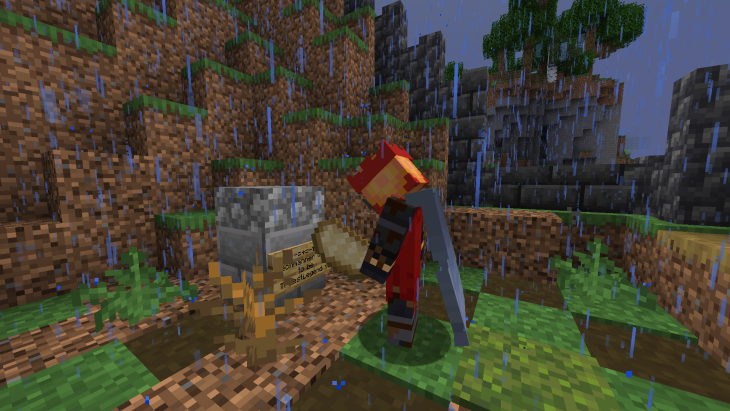

De Gekkies Krant:
Leiderschap, een nieuwe gek, kerkhof en meer gekkigheid!
Nieuw Leiderschap?

Disclaimer: Leiderschap!
"Een functionerend dorp heeft een leider nodig", zoiets zou Joa04 hebben gezegd vandaag. Deze uitspraak inspireerde Niels en hij verklaarde zichzelf tot koning zodra hij een kroon op zijn skin had getoverd.
Een beetje structuur in een kapitalistisch dorpje is niet slecht, maar is daar een koning voor nodig? Dat is een individuele vraag die u zelf moet beantwoorden, ik ben slechts hier om het nieuws van dit leiderschap te verkondigen aan degene die niet op de server spelen, maar wel de krant lezen (Ik kijk naar jou, Serge). Maar ik kan u wel dit vertellen; Niels is "a changed man" sinds de vorige servers! Hij wii slechts het beste voor de Gekkies wereld!
"Ik heb dit harnas uit eigen hand gesmeden, het kost alleen mij wat!" Is wat Mechmanner (Niels) tegen mij zei, hij wil geen last zijn, slechts een hulp. En hij vertelde mij ook, dat als het volk wil dat hij de troon leeg laat, hij dat ook doet! Maar ik herhaal het is u keuze of u Niels wil als u koning der Gekkies!
Een nieuw lid!
"Een nieuw ziel voor het kapitalisme"
Afgelopen vrijdag, 6 september 2024, joinde Nijnt de server! Nijnt's echte naam is Stijn, een vriend van Joël. Joellizzy zou hem al 3 maanden eerder hebben uitgenodigd, maar het kaartje kwam pas laat aan.
Zoals elke keer als er een nieuw lid joint; de server wordt een chaos! Het ging een beetje zoals dit: Stijn kreeg elytra, stijn werd vermoord. Stijn krijgt tour, Joellizzy stierf in een vuur door Mechmanner. Stijn wordt weggeknockbacked door een random boekje, Stijn sterft door een mace. Stijn leeft normaal leven, Stijn wordt vermoord. Maar dat hoort bij een Gekkie zijn, mij is het ook al vaak overkomen...
Een Kerkhof!
Na de zoveelste dood van Nijnt, besloot Joellizzy om een kerkhof te bouwen, want waarom ook niet? Dus werd er al gauw een begraafplaats uit de grond gestampt! Maar natuurlijk moeten er ook stenen met borden komen, dus dat werd ook gedaan. De eerste spelers kregen hun graf en een gepersonaliseerd bordje er op (Zie Foto). Joellizzy heeft hier ook een deal: 'Je eerste graf gratis!'
Mechmanner (Niels) kwam ook even kijken en hij besloot dat er wat emojis op zijn grafsteen moesten komen, dus als je langs het kerkhof komt; kijk even bij Niels' steen! Maar niet alles kan goed blijven gaan, want een onbekend persoon met een snor heeft vandaag twee graven gevandaliseert! Joellizzy probeert dit in de toekomst te voorkomen.
Archeologische Vondst!
Joellizzy en Mechmanner waren aan het graven dichtbij de vuilnisbaken, toen ze een onbekend gebouw vonden (Zie foto). Het gebouw moest nog uit het tijdperk Begin_Server komen, wat een hele lange tijd geleden was! Volgens Mechmanner zou dit ooit hebben gedient als een geheime tunnel, maar wie weet? Het is in ieder geval goed bewaard gebleven!
Bedankt voor het lezen :) Dit was een extra lange Gekkies Krant! Binnenkort meer LANGE kranten, hopelijk! Laat me weten als dit vreselijk verouderd! Maar zoals altijd: Aldus, Reporter Joellizzy en _atheron_ van de Gekkies Krant